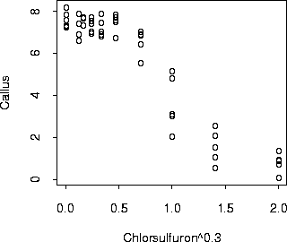

| / Home |
Keywords: nonlinear regression, log-transform, errors-in-variables, heteroscedasticity, gamma distribution
Herbicide bioassay is concerned with the reduction in plant growth as a function of the herbicide dose applied. This is a interest when developing new herbicides, assessing environmental effects on non-target species or estimating the residual herbicides in a treated soil before planting a new, herbicide suspectible crop. A typical experiment would comprise a series of doses ranging from ineffective to severely damaging to establish a dose-response relationship. In this experiment the callus area of a tissue culture of Brassica napus was measured corresponding to different doses of a sulfonylurea herbicide, metsulfuron methyl.
| Variable | Description | ||
| Chlorsulfuron | Concentration of herbicide in nmol/L | ||
| Callus | Logarithm of callus area | ||
Data File (tab-delimited text file)
| Seiden, P., Kappel, D., and Streibig, J. C. (1998). Response of Brassica napus L. tissue culture to metsulfuron methyl and chlorsulfuron. Weed Research, 38, 221-228. |
Bellio, R., Jensen, J. E., and Seiden, P. (1999). Applications of likelihood asymptotics for nonlinear regression in herbicide bioassays. Technical Report, Department of Statistics, University of Padova. |
A standard approach is to model the log-callus area using a log-logistic response curve, and then to find a model for the variance in terms of the mean or the dose.

|
Home - About Us -
Contact Us Copyright © Gordon Smyth |